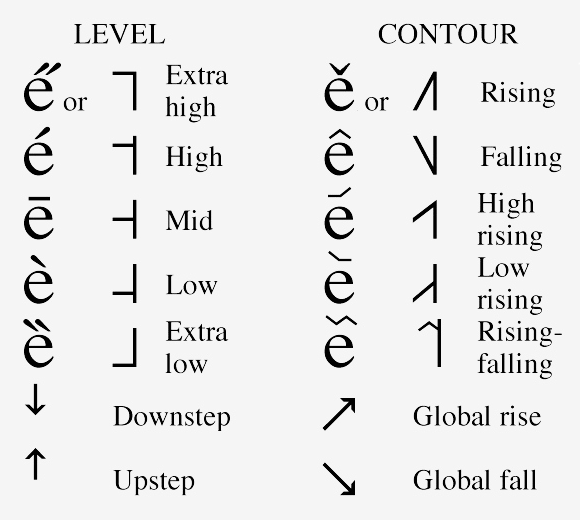

The IPA provides the following chart for tonal notation which is quite self explanatory. A flat line indicates that the tone is level whereas a contour line indicates the shapes of contour tones. Relative to a vertical shaft, one can have a relatively clear idea how high a tone is relative to other tones.
The IPA also provides an alternative way of notating tones by putting accent marks on the vowels, as shown in the following picture.
It is noteworthy that there are other systems for tonal notation. Among them, Chao's (1930) System of Tone Letters is most common among Chinese linguists. Inspired by music, Chao uses a scale from 1 to 5 to indicate the lowest to the highest tone. Thus, by using a sequence of these numbers, one can effectively indicate the shape of any tone, contour or level. For example, [55] would indicate a high flat tone since it begins with the high tone [5] and ends with another high tone [5]; [51] would be a falling tone spanning the entire range starting for the high [5] to the low [1]. To listen to what these tones sound like, try clicking on any links below:
The tones you hear above are artificially generated and hence are relatively easy to perceive. In actual language articulation, it is much harder to discern the contours of each tone. Classroom training is required to achieve that kind of competence. Below are some examples from the Cantonese syllable [fʌn].
Linguists interested in tonal system of South American languages use a slightly different system. Like Chao, a numerical scale of 1-5 is used, except that for them 5 is the lowest tone and 1 the highest.
The IPA provides the following chart for tonal notation which is quite self explanatory. A flat line indicates that the tone is level whereas a contour line indicates the shapes of contour tones. Relative to a vertical shaft, one can have a relatively clear idea how high a tone is relative to other tones.
The IPA also provides an alternative way of notating tones by putting accent marks on the vowels, as shown in the following picture.
It is noteworthy that there are other systems for tonal notation. Among them, Chao's (1930) System of Tone Letters is most common among Chinese linguists. Inspired by music, Chao uses a scale from 1 to 5 to indicate the lowest to the highest tone. Thus, by using a sequence of these numbers, one can effectively indicate the shape of any tone, contour or level. For example, [55] would indicate a high flat tone since it begins with the high tone [5] and ends with another high tone [5]; [51] would be a falling tone spanning the entire range starting for the high [5] to the low [1]. To listen to what these tones sound like, try clicking on any links below:
| Level tones |
|
|
||||||||
|
|
The tones you hear above are artificially generated and hence are relatively easy to perceive. In actual language articulation, it is much harder to discern the contours of each tone. Classroom training is required to achieve that kind of competence. Below are some examples from the Cantonese syllable [fʌn].
| "colourful" | "grave" |
| [55] | [21] |
| "powder" | "wrath" |
| [35] | [13] |
| "sleep" | "share" |
| [33] | [22] |
Linguists interested in tonal system of South American languages use a slightly different system. Like Chao, a numerical scale of 1-5 is used, except that for them 5 is the lowest tone and 1 the highest.